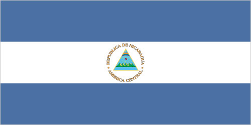
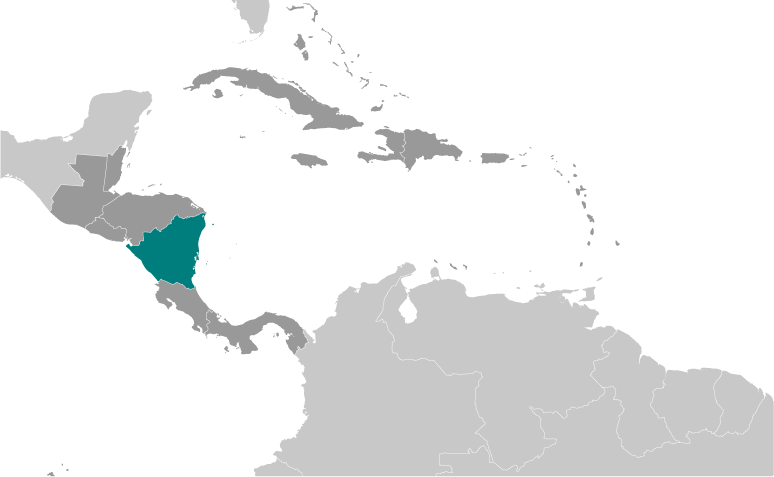
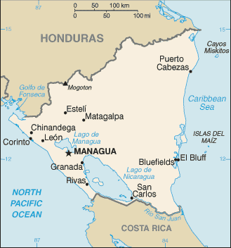

Central America and Caribbean :: NICARAGUA
Introduction :: NICARAGUA
-
The Pacific coast of Nicaragua was settled as a Spanish colony from Panama in the early 16th century. Independence from Spain was declared in 1821 and the country became an independent republic in 1838. Britain occupied the Caribbean Coast in the first half of the 19th century, but gradually ceded control of the region in subsequent decades. Violent opposition to governmental manipulation and corruption spread to all classes by 1978 and resulted in a short-lived civil war that brought the Marxist Sandinista guerrillas led by Daniel ORTEGA Saavedra to power in 1979. Nicaraguan aid to leftist rebels in El Salvador prompted the US to sponsor anti-Sandinista contra guerrillas through much of the 1980s. After losing free and fair elections in 1990, 1996, and 2001, former Sandinista President Daniel ORTEGA was elected president in 2006, 2011, and most recently in 2016. Municipal, regional, and national-level elections since 2008 have been marred by widespread irregularities. Nicaragua's infrastructure and economy - hard hit by the earlier civil war and by Hurricane Mitch in 1998 - are being rebuilt, but democratic institutions have weakened under the ORTEGA administration as the president has garnered full control over all four branches of government: the presidency, the judicial, the National Assembly, and the Supreme Electoral Council.
Geography :: NICARAGUA
-
Central America, bordering both the Caribbean Sea and the North Pacific Ocean, between Costa Rica and Honduras13 00 N, 85 00 WCentral America and the Caribbeantotal: 130,370 sq kmland: 119,990 sq kmwater: 10,380 sq kmcountry comparison to the world: 99slightly larger than Pennsylvania; slightly smaller than New York statetotal: 1,253 kmborder countries (2): Costa Rica 313 km, Honduras 940 km910 kmterritorial sea: 12 nmcontiguous zone: 24 nmcontinental shelf: natural prolongationtropical in lowlands, cooler in highlandsextensive Atlantic coastal plains rising to central interior mountains; narrow Pacific coastal plain interrupted by volcanoesmean elevation: 298 melevation extremes: lowest point: Pacific Ocean 0 mhighest point: Mogoton 2,085 mgold, silver, copper, tungsten, lead, zinc, timber, fishagricultural land: 42.2%arable land 12.5%; permanent crops 2.5%; permanent pasture 27.2%forest: 25.3%other: 32.5% (2011 est.)1,990 sq km (2012)the overwhelming majority of the population resides in the western half of the country, with much of the urban growth centered in the capital city of Managua; coastal areas also show large population clustersdestructive earthquakes; volcanoes; landslides; extremely susceptible to hurricanesvolcanism: significant volcanic activity; Cerro Negro (728 m), which last erupted in 1999, is one of Nicaragua's most active volcanoes; its lava flows and ash have been known to cause significant damage to farmland and buildings; other historically active volcanoes include Concepcion, Cosiguina, Las Pilas, Masaya, Momotombo, San Cristobal, and Telicadeforestation; soil erosion; water pollutionparty to: Biodiversity, Climate Change, Climate Change-Kyoto Protocol, Desertification, Endangered Species, Environmental Modification, Hazardous Wastes, Law of the Sea, Ozone Layer Protection, Ship Pollution, Wetlands, Whalingsigned, but not ratified: none of the selected agreementslargest country in Central America; contains the largest freshwater body in Central America, Lago de Nicaragua
People and Society :: NICARAGUA
-
6,025,951 (July 2017 est.)country comparison to the world: 111noun: Nicaraguan(s)adjective: Nicaraguanmestizo (mixed Amerindian and white) 69%, white 17%, black 9%, Amerindian 5%Spanish (official) 95.3%, Miskito 2.2%, Mestizo of the Caribbean coast 2%, other 0.5%note: English and indigenous languages found on the Caribbean coast (2005 est.)Roman Catholic 51.6%, Evangelical 33.9%, other 1.5%, unspecified 12.9%, none 0.2% (2016 est.)Despite being one of the poorest countries in Latin America, Nicaragua has improved its access to potable water and sanitation and has ameliorated its life expectancy, infant and child mortality, and immunization rates. However, income distribution is very uneven, and the poor, agriculturalists, and indigenous people continue to have less access to healthcare services. Nicaragua's total fertility rate has fallen from around 6 children per woman in 1980 to below replacement level today, but the high birth rate among adolescents perpetuates a cycle of poverty and low educational attainment.Nicaraguans emigrate primarily to Costa Rica and to a lesser extent the United States. Nicaraguan men have been migrating seasonally to Costa Rica to harvest bananas and coffee since the early 20th century. Political turmoil, civil war, and natural disasters from the 1970s through the 1990s dramatically increased the flow of refugees and permanent migrants seeking jobs, higher wages, and better social and healthcare benefits. Since 2000, Nicaraguan emigration to Costa Rica has slowed and stabilized. Today roughly 300,000 Nicaraguans are permanent residents of Costa Rica - about 75% of the foreign population - and thousands more migrate seasonally for work, many illegally.0-14 years: 27.24% (male 837,465/female 803,985)15-24 years: 21.26% (male 644,153/female 636,787)25-54 years: 40.24% (male 1,149,747/female 1,274,818)55-64 years: 5.98% (male 166,782/female 193,781)65 years and over: 5.28% (male 141,816/female 176,617) (2017 est.)total dependency ratio: 54.1youth dependency ratio: 46.3elderly dependency ratio: 7.8potential support ratio: 12.8 (2015 est.)total: 25.7 yearsmale: 24.8 yearsfemale: 26.6 years (2017 est.)country comparison to the world: 1540.98% (2017 est.)country comparison to the world: 11217.7 births/1,000 population (2017 est.)country comparison to the world: 1045.1 deaths/1,000 population (2017 est.)country comparison to the world: 189-2.7 migrant(s)/1,000 population (2017 est.)country comparison to the world: 172the overwhelming majority of the population resides in the western half of the country, with much of the urban growth centered in the capital city of Managua; coastal areas also show large population clustersurban population: 59.4% of total population (2017)rate of urbanization: 1.84% annual rate of change (2015-20 est.)MANAGUA (capital) 956,000 (2015)at birth: 1.05 male(s)/female0-14 years: 1.04 male(s)/female15-24 years: 1.01 male(s)/female25-54 years: 0.9 male(s)/female55-64 years: 0.86 male(s)/female65 years and over: 0.81 male(s)/femaletotal population: 0.95 male(s)/female (2016 est.)19.2 yearsnote: median age at first birth among women 25-29 (2011/12 est.)150 deaths/100,000 live births (2015 est.)country comparison to the world: 60total: 18.3 deaths/1,000 live birthsmale: 21.1 deaths/1,000 live birthsfemale: 15.5 deaths/1,000 live births (2017 est.)country comparison to the world: 89total population: 73.5 yearsmale: 71.3 yearsfemale: 75.8 years (2017 est.)country comparison to the world: 1331.89 children born/woman (2017 est.)country comparison to the world: 13880.4% (2011/12)9% of GDP (2014)country comparison to the world: 410.91 physicians/1,000 population (2014)0.9 beds/1,000 population (2012)improved:urban: 99.3% of populationrural: 69.4% of populationtotal: 87% of populationunimproved:urban: 0.7% of populationrural: 30.6% of populationtotal: 13% of population (2015 est.)improved:urban: 76.5% of populationrural: 55.7% of populationtotal: 67.9% of populationunimproved:urban: 23.5% of populationrural: 44.3% of populationtotal: 32.1% of population (2015 est.)0.2% (2016 est.)country comparison to the world: 968,900 (2016 est.)country comparison to the world: 97<500 (2016 est.)degree of risk: highfood or waterborne diseases: bacterial diarrhea, hepatitis A, and typhoid fevervectorborne disease: dengue fever and malarianote: active local transmission of Zika virus by Aedes species mosquitoes has been identified in this country (as of August 2016); it poses an important risk (a large number of cases possible) among US citizens if bitten by an infective mosquito; other less common ways to get Zika are through sex, via blood transfusion, or during pregnancy, in which the pregnant woman passes Zika virus to her fetus (2016)23.7% (2016)country comparison to the world: 634.5% of GDP (2010)country comparison to the world: 88definition: age 15 and over can read and writetotal population: 82.8%male: 82.4%female: 83.2% (2015 est.)total: 11.9%male: 9.8%female: 15.6% (2010 est.)country comparison to the world: 110
Government :: NICARAGUA
-
conventional long form: Republic of Nicaraguaconventional short form: Nicaragualocal long form: Republica de Nicaragualocal short form: Nicaraguaetymology: Nicarao was the name of the largest indigenous settlement at the time of Spanish arrival; conquistador Gil GONZALEZ Davila, who explored the area (1622-23), combined the name of the community with the Spanish word "agua" (water), referring to the two large lakes in the west of the country (Lake Managua and Lake Nicaragua)presidential republicname: Managuageographic coordinates: 12 08 N, 86 15 Wtime difference: UTC-6 (1 hour behind Washington, DC, during Standard Time)15 departments (departamentos, singular - departamento) and 2 autonomous regions* (regiones autonomistas, singular - region autonoma); Boaco, Carazo, Chinandega, Chontales, Costa Caribe Norte*, Costa Caribe Sur*, Esteli, Granada, Jinotega, Leon, Madriz, Managua, Masaya, Matagalpa, Nueva Segovia, Rio San Juan, Rivas15 September 1821 (from Spain)Independence Day, 15 September (1821)several previous; latest adopted 19 November 1986, effective 9 January 1987; amended several times, last in 2014 (2016)civil law system; Supreme Court may review administrative actsaccepts compulsory ICJ jurisdiction with reservations; non-party state to the ICCtcitizenship by birth: yescitizenship by descent: yesdual citizenship recognized: no, except in cases where bilateral agreements existresidency requirement for naturalization: 4 years16 years of age; universalchief of state: President Jose Daniel ORTEGA Saavedra (since 10 January 2007); Vice President Rosario MURILLO Zambrana (since 10 January 2017); note - the president is both chief of state and head of governmenthead of government: President Jose Daniel ORTEGA Saavedra (since 10 January 2007); Vice President Rosario MURILLO Zambrana (since 10 January 2017)cabinet: Council of Ministers appointed by the presidentelections/appointments: president and vice president directly elected on the same ballot by simple majority popular vote for a 5-year term (no term limits); election last held on 6 November 2016 (next to be held by November 2021)election results: Jose Daniel ORTEGA Saavedra reelected president; percent of vote - Jose Daniel ORTEGA Saavedra (FSLN) 72.4%, Maximino RODRIGUEZ (PLC) 15%, Jose del Carmen ALVARADO (PLI) 4.5%, Saturnino CERRATO Hodgson (ALN) 4.3%, other 3.7%description: unicameral National Assembly or Asamblea Nacional (92 seats; 70 members in multi-seat constituencies and 20 members in a single nationwide constituency directly elected by proportional representation vote; 2 seats reserved for the previous president and the runner-up candidate in the previous presidential election; members serve 5-year terms;)elections: last held on 6 November 2016 (next to be held by November 2021)election results: percent of vote by party - NA; seats by party - FSLN 70, PLC 13, ALN 2, PLI 2, APRE 1, PC 1, YATAMA 1highest court(s): Supreme Court or Corte Suprema de Justicia (consists of 16 judges organized into administrative, civil, criminal, and constitutional chambers)judge selection and term of office: Supreme Court judges elected by the National Assembly to serve 5-year staggered termssubordinate courts: Appeals Court; first instance civil, criminal, and military courtsAlliance for the Republic or APRE [Carlos CANALES]Conservative Party or PC [Alfredo CESAR]Independent Liberal Party or PLI [Jose del Carmen ALVARADO]Liberal Constitutionalist Party or PLC [Maria Haydee OSUNA]Nicaraguan Liberal Alliance or ALN [Alejandro MEJIA Ferreti]Sandinista National Liberation Front or FSLN [Jose Daniel ORTEGA Saavedra]Sandinista Renovation Movement or MRS [Ana Margarita VIJIL]Sons of Mother Earth or YATAMA [Brooklin RIVERA]National Workers Front or FNT (a Sandinista umbrella group - includes Farm Workers Association or ATC, Health Workers Federation or FETASALUD, Heroes and Martyrs Confederation of Professional Associations or CONAPRO, National Association of Educators of Nicaragua or ANDEN, National Union of Employees or UNE, National Union of Farmers and Ranchers or UNAG, Sandinista Workers Central or CST, and Union of Journalists of Nicaragua or UPN)Nicaraguan Workers' Central or CTN (independent labor union)Permanent Congress of Workers or CPT (umbrella group of non-Sandinista labor unions - includes Autonomous Nicaraguan Workers Central or CTN-A, Confederation of Labor Unification or CUS, Independent General Confederation of Labor or CGT-I, Labor Action and Unity Central or CAUS)Superior Council of Private Enterprise or COSEP (a confederation of business groups)BCIE, CACM, CD, CELAC, FAO, G-77, IADB, IAEA, IBRD, ICAO, ICRM, IDA, IFAD, IFC, IFRCS, ILO, IMF, IMO, Interpol, IOC, IOM, IPU, ISO (correspondent), ITSO, ITU, ITUC (NGOs), LAES, LAIA (observer), MIGA, NAM, OAS, OPANAL, OPCW, PCA, Petrocaribe, SICA, UN, UNCTAD, UNESCO, UNHCR, UNIDO, Union Latina, UNWTO, UPU, WCO, WHO, WIPO, WMO, WTOchief of mission: Ambassador Francisco Obadiah CAMPBELL Hooker (since 28 June 2010)chancery: 1627 New Hampshire Avenue NW, Washington, DC 20009telephone: [1] (202) 939-6570, 6573FAX: [1] (202) 939-6545consulate(s) general: Houston, Los Angeles, Miami, New York, San Franciscochief of mission: Ambassador Laura Farnsworth DOGU (since 9 November 2015)embassy: Kilometer 5.5 Carretera Sur, Managuamailing address: American Embassy Managua, APO AA 34021telephone: [505] 2252-7100, 2252-7888; 2252-7634 (after hours)FAX: [505] 2252-7250three equal horizontal bands of blue (top), white, and blue with the national coat of arms centered in the white band; the coat of arms features a triangle encircled by the words REPUBLICA DE NICARAGUA on the top and AMERICA CENTRAL on the bottom; the banner is based on the former blue-white-blue flag of the Federal Republic of Central America; the blue bands symbolize the Pacific Ocean and the Caribbean Sea, while the white band represents the land between the two bodies of waternote: similar to the flag of El Salvador, which features a round emblem encircled by the words REPUBLICA DE EL SALVADOR EN LA AMERICA CENTRAL centered in the white band; also similar to the flag of Honduras, which has five blue stars arranged in an X pattern centered in the white bandturquoise-browed motmot (bird); national colors: blue, whitename: "Salve a ti, Nicaragua" (Hail to Thee, Nicaragua)lyrics/music: Salomon Ibarra MAYORGA/traditional, arranged by Luis Abraham DELGADILLOnote: although only officially adopted in 1971, the music was approved in 1918 and the lyrics in 1939; the tune, originally from Spain, was used as an anthem for Nicaragua from the 1830s until 1876
Economy :: NICARAGUA
-
Nicaragua, the poorest country in Central America and the second poorest in the Western Hemisphere, has widespread underemployment and poverty. GDP growth of 4.7% in 2016 was insufficient to make a significant difference. Textiles and agriculture combined account for nearly 50% of Nicaragua's exports. Beef, coffee, and gold are Nicaragua’s top three export commodities.The Dominican Republic-Central America-United States Free Trade Agreement has been in effect since April 2006 and has expanded export opportunities for many Nicaraguan agricultural and manufactured goods.In 2013, the government granted a 50-year concession with the option for an additional 50 years to a newly formed Chinese-run company to finance and build an inter-oceanic canal and related projects, at an estimated cost of $50 billion. The canal construction has not started.$34.07 billion (2016 est.)$32.13 billion (2015 est.)$30.31 billion (2014 est.)note: data are in 2016 dollarscountry comparison to the world: 125$13.23 billion (2016 est.)4.7% (2016 est.)4.9% (2015 est.)4.8% (2014 est.)country comparison to the world: 43$5,500 (2016 est.)$5,400 (2015 est.)$5,200 (2014 est.)note: data are in 2016 dollarscountry comparison to the world: 16722.7% of GDP (2016 est.)23.6% of GDP (2015 est.)21.8% of GDP (2014 est.)country comparison to the world: 68household consumption: 71.4%government consumption: 15.3%investment in fixed capital: 29.5%investment in inventories: 1.7%exports of goods and services: 39%imports of goods and services: -57% (2016 est.)agriculture: 14.8%industry: 24.2%services: 50.4% (2016 est.)coffee, bananas, sugarcane, rice, corn, tobacco, cotton, sesame, soya, beans, beef, veal, pork, poultry, dairy products, shrimp, lobsters, peanutsfood processing, chemicals, machinery and metal products, knit and woven apparel, petroleum refining and distribution, beverages, footwear, wood, electric wire harness manufacturing, mining3.4% (2016 est.)country comparison to the world: 693.013 million (2016 est.)country comparison to the world: 103agriculture: 31%industry: 18%services: 50% (2011 est.)6.2% (2016 est.)6.1% (2015 est.)note: underemployment was 46.5% in 2008country comparison to the world: 7729.6% (2015 est.)lowest 10%: 1.8%highest 10%: 47.1% (2014)47.1 (2014)45.8 (2009)country comparison to the world: 26revenues: $3.637 billionexpenditures: $3.848 billion (2016 est.)27.9% of GDP (2016 est.)country comparison to the world: 96-1.6% of GDP (2016 est.)country comparison to the world: 7745.2% of GDP (2016 est.)45.5% of GDP (2015 est.)note: official data; data cover general government debt, and includes debt instruments issued (or owned) by Government entities other than the treasury; the data include treasury debt held by foreign entities, as well as intra-governmental debt; intra-governmental debt consists of treasury borrowings from surpluses in the social funds, such as retirement, medical care, and unemployment, debt instruments for the social funds are not sold at public auctions; Nicaragua rebased its GDP figures in 2012, which reduced the figures for debt as a percentage of GDPcountry comparison to the world: 114calendar year3.5% (2016 est.)4% (2015 est.)country comparison to the world: 1513% (31 December 2010)country comparison to the world: 10811.44% (31 December 2016 est.)12.05% (31 December 2015 est.)country comparison to the world: 72$1.043 billion (31 December 2016 est.)$1.093 billion (31 December 2015 est.)country comparison to the world: 154$1.445 billion (31 December 2016 est.)$1.52 billion (31 December 2015 est.)country comparison to the world: 164$6.159 billion (31 December 2016 est.)$5.659 billion (31 December 2015 est.)country comparison to the world: 119$1.568 billion (31 December 2016)$1.209 billion (31 December 2015)$995 million (31 December 2014)country comparison to the world: 103$-1.133 billion (2016 est.)$-1.143 billion (2015 est.)country comparison to the world: 130$3.772 billion (2016 est.)$3.859 billion (2015 est.)country comparison to the world: 115coffee, beef, gold, sugar, peanuts, shrimp and lobster, tobacco, cigars, automobile wiring harnesses, textiles, apparelUS 51.5%, Mexico 13.8%, El Salvador 6%, Venezuela 5.9% (2016)$6.384 billion (2016 est.)$6.405 billion (2015 est.)country comparison to the world: 112consumer goods, machinery and equipment, raw materials, petroleum productsUS 19.7%, China 12.9%, Mexico 9.7%, Costa Rica 7.8%, Guatemala 6.5%, Netherlands Antilles 5.7%, El Salvador 4.8% (2016)$2.448 billion (31 December 2016 est.)$2.492 billion (31 December 2015 est.)country comparison to the world: 112$10.87 billion (31 December 2016 est.)$10.49 billion (31 December 2015 est.)country comparison to the world: 108cordobas (NIO) per US dollar -28.678 (2016 est.)28.678 (2015 est.)27.257 (2014 est.)26.01 (2013 est.)23.55 (2012 est.)
Energy :: NICARAGUA
-
population without electricity: 1,400,000electrification - total population: 78%electrification - urban areas: 100%electrification - rural areas: 43% (2013)3.218 billion kWh (2016 est.)country comparison to the world: 1323.177 billion kWh (2016 est.)country comparison to the world: 13417.87 million kWh (2016 est.)country comparison to the world: 91109 million kWh (2016 est.)country comparison to the world: 961.395 million kW (2016 est.)country comparison to the world: 12459% of total installed capacity (2015 est.)country comparison to the world: 1320% of total installed capacity (2015 est.)country comparison to the world: 1598.4% of total installed capacity (2015 est.)country comparison to the world: 12236.1% of total installed capacity (2015 est.)country comparison to the world: 70 bbl/day (2016 est.)country comparison to the world: 1800 bbl/day (2014 est.)country comparison to the world: 17414,180 bbl/day (2014 est.)country comparison to the world: 700 bbl (1 January 2017 es)country comparison to the world: 17814,260 bbl/day (2014 est.)country comparison to the world: 9930,000 bbl/day (2015 est.)country comparison to the world: 122253.3 bbl/day (2014 est.)country comparison to the world: 11916,130 bbl/day (2014 est.)country comparison to the world: 1250 cu m (2016 est.)country comparison to the world: 1810 cu m (2016 est.)country comparison to the world: 1200 cu m (2016 est.)country comparison to the world: 1620 cu m (2016 est.)country comparison to the world: 1700 cu m (1 January 2015 es)country comparison to the world: 1835.2 million Mt (2013 est.)country comparison to the world: 125
Communications :: NICARAGUA
-
total subscriptions: 366,636subscriptions per 100 inhabitants: 6 (July 2016 est.)country comparison to the world: 111total: 7,745,512subscriptions per 100 inhabitants: 130 (July 2016 est.)country comparison to the world: 105general assessment: system being upgraded by foreign investment; nearly all installed telecommunications capacity now uses digital technology, owing to investments since privatization of the formerly state-owned telecommunications companydomestic: since privatization, access to fixed-line and mobile-cellular services has improved; fixed-line teledensity roughly 6 per 100 persons; mobile-cellular telephone subscribership has increased to almost 130 per 100 personsinternational: country code - 505; the Americas Region Caribbean Ring System (ARCOS-1) fiber-optic submarine cable provides connectivity to South and Central America, parts of the Caribbean, and the US; satellite earth stations - 1 Intersputnik (Atlantic Ocean region) and 1 Intelsat (Atlantic Ocean) (2016)multiple terrestrial TV stations, supplemented by cable TV in most urban areas; nearly all are government-owned or affiliated; more than 300 radio stations, both government-affiliated and privately owned (2016).nitotal: 1,466,152percent of population: 24.6% (July 2016 est.)country comparison to the world: 123
Transportation :: NICARAGUA
-
number of registered air carriers: 1inventory of registered aircraft operated by air carriers: 2annual passenger traffic on registered air carriers: 61,031annual freight traffic on registered air carriers: 0 mt-km (2015)YN (2016)147 (2013)country comparison to the world: 40total: 122,438 to 3,047 m: 31,524 to 2,437 m: 2914 to 1,523 m: 3under 914 m: 4 (2017)total: 1351,524 to 2,437 m: 1914 to 1,523 m: 15under 914 m: 119 (2013)oil 54 km (2013)total: 23,897 kmpaved: 3,346 kmunpaved: 20,551 km (2014)country comparison to the world: 1012,220 km (navigable waterways as well as the use of the large Lake Managua and Lake Nicaragua; rivers serve only the sparsely populated eastern part of the country) (2011)country comparison to the world: 39major seaport(s): Bluefields, Corinto
Military and Security :: NICARAGUA
-
0.55% of GDP (2016)0.78% of GDP (2015)0.69% of GDP (2014)0.68% of GDP (2013)0.67% of GDP (2012)country comparison to the world: 120National Army of Nicaragua (Ejercito Nacional de Nicaragua, ENN; includes Navy, Air Force) (2013)18-30 years of age for voluntary military service; no conscription; tour of duty 18-36 months; requires Nicaraguan nationality and 6th-grade education (2012)
Transnational Issues :: NICARAGUA
-
the 1992 ICJ ruling for El Salvador and Honduras advised a tripartite resolution to establish a maritime boundary in the Gulf of Fonseca, which considers Honduran access to the Pacific; Nicaragua and Costa Rica regularly file border dispute cases over the delimitations of the San Juan River and the northern tip of Calero Island to the ICJ; there is an ongoing case in the ICJ to determine Pacific and Atlantic ocean maritime borders as well as land borders; in 2009, the ICJ ruled that Costa Rican vessels carrying out police activities could not use the river, but official Costa Rican vessels providing essential services to riverside inhabitants and Costa Rican tourists could travel freely on the river; in 2011, the ICJ provisionally ruled that both countries must remove personnel from the disputed area; in 2013, the ICJ rejected Nicaragua's 2012 suit to halt Costa Rica's construction of a highway paralleling the river on the grounds of irreparable environmental damage; in 2013, the ICJ, regarding the disputed territory, ordered that Nicaragua should refrain from dredging or canal construction and refill and repair damage caused by trenches connecting the river to the Caribbean and upheld its 2010 ruling that Nicaragua must remove all personnel; in early 2014, Costa Rica brought Nicaragua to the ICJ over offshore oil concessions in the disputed region; Nicaragua filed a case against Colombia in 2013 over the delimitation of the Continental shelf beyond the 200 nautical miles from the Nicaraguan coast, as well as over the alleged violation by Colombia of Nicaraguan maritime space in the Caribbean Seatransshipment point for cocaine destined for the US and transshipment point for arms-for-drugs dealing